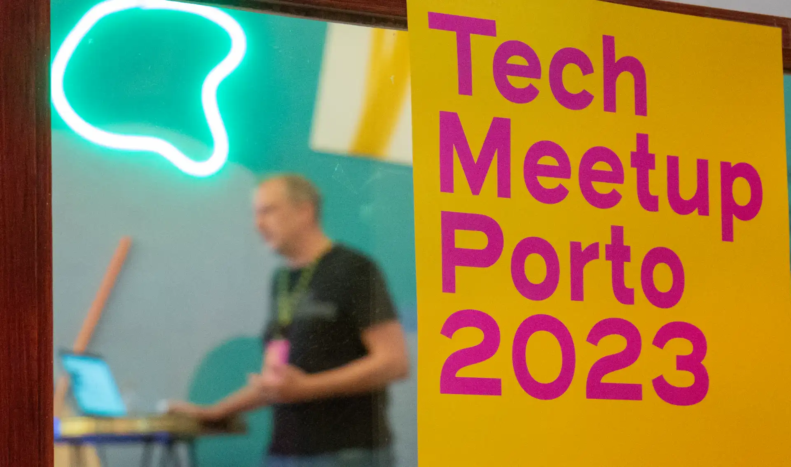
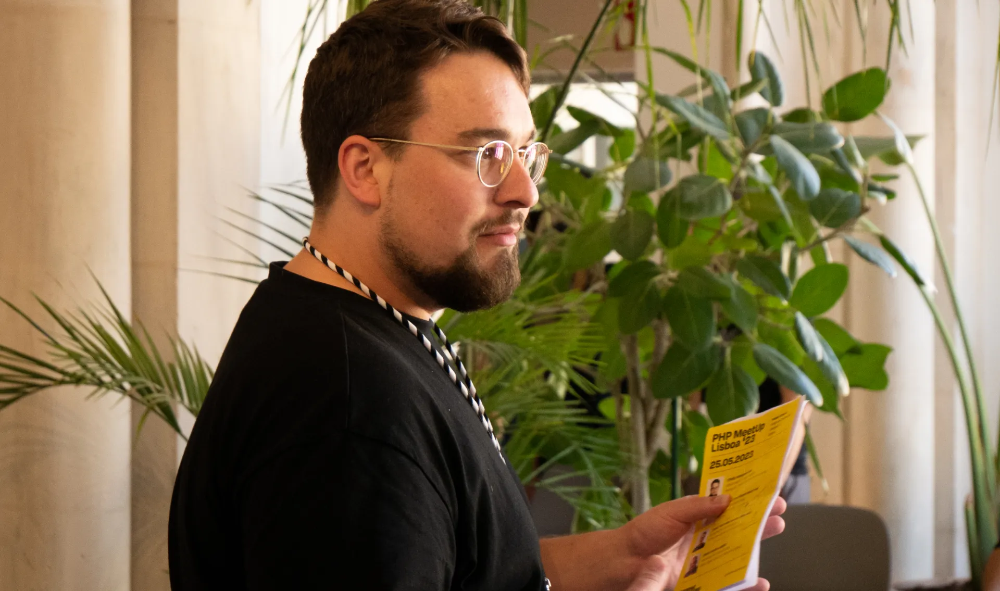
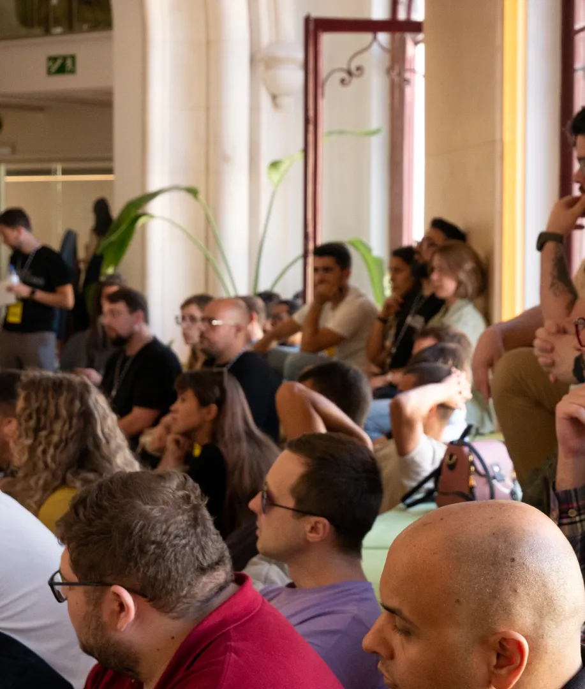
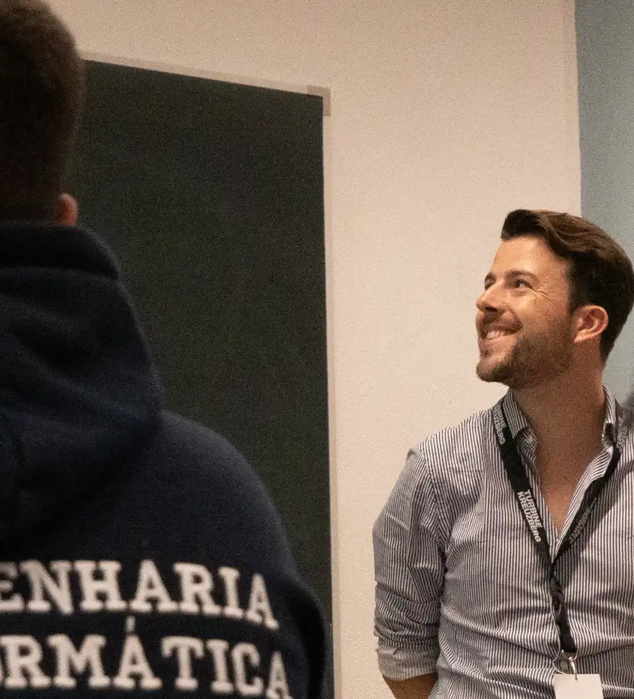
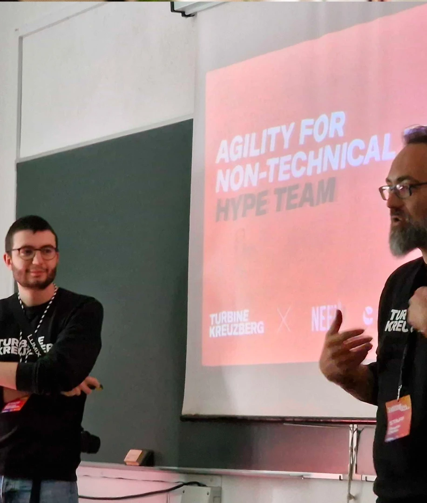
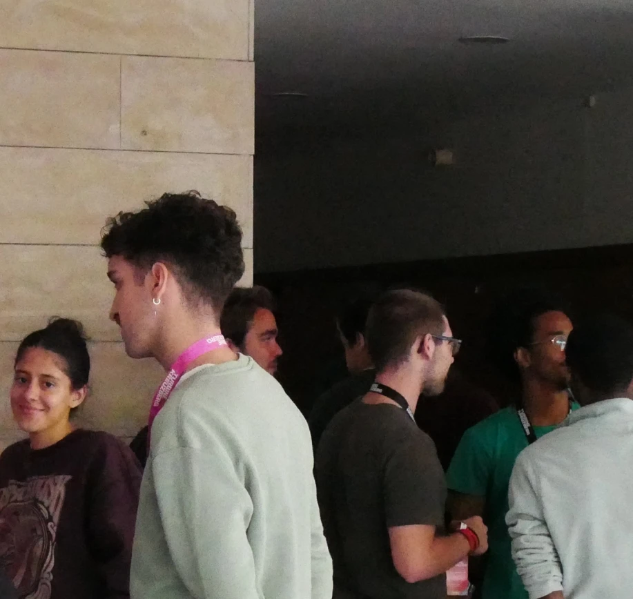

David HerdeiroThere's No Advertising Like Events
Make a great event, a memorable tuesday afternoon, and people will talk about you for months. An event like this
will bring you more than ads around the city, and will cost less.
During my time at Turbine Kreuzberg, I had the pleasure to work on a few events. Here are some of them.
Tech Meetup Porto 2023
Event held at Selina Navis Coworking, Porto. I took care of the visuals and copy and helped my team with general
logistics, Meetup.com maintenance and Social Media
posts. We had a near-total of 70 attendees, a tech-focused talk and a discussion panel about women in tech. The
event was a success, and the feedback was overwhelmingly positive. During the weeks after the event we noticed a
significant increase in our Social Media followers visits. And a constant, weekly Meetup follower growth that
lasted several months.

Tech Meetup Porto 2023, at Selina Navis Coworking, Porto. Visuals and Copy by me.
PHP Meetup Lisboa '23
Event held at Heden Rossio, Lisboa. I took care of the visuals and copy, and helped my team with general
logistics, Meetup.com maintenance and Social Media posts. This was a smaller event, with a total of 30 attendees,
but marked the beginning of a series of events across the country. This event served as a test for our team, and a
proof that the best way to get people to know you is to get out there and meet them. After this event, we had an
influx of Lisbon based developers applying to our team, and a significant increase in our Social Media followers
visits.


PHP Meetup Lisboa '23, at Heden Rossio, Lisboa.
University Events
If you're looking for a steady, long-term team growth, then Universities and related schools are the best place to
showcase your brand. Students are eager to learn about as many companies as possible, they are open to new ideas,
and more importantly, if they like you, they will talk about you. They will even compare you to other companies,
and if you stand out, they will remember you over other companies.



Set of pictures from several University events.